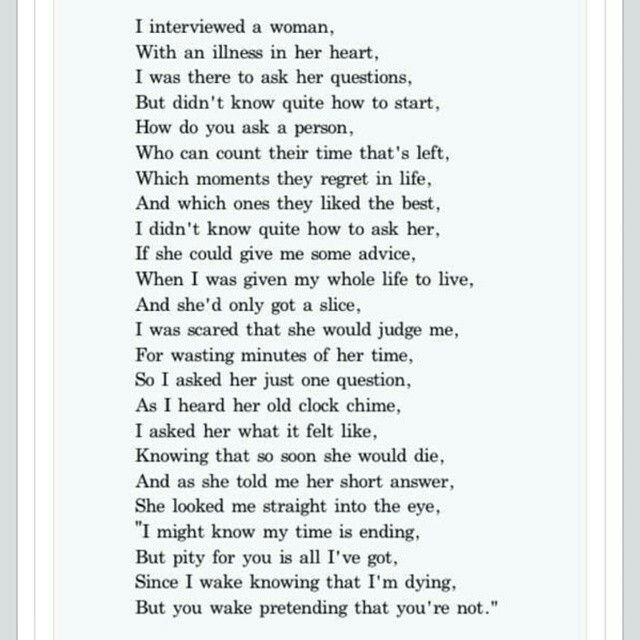

This page showcases all of my favorite poems and links a blog to regular new ones, including both one stanza poems and longer poems.
Poetry Blog
Click below to see my poetry blog, poems will be uploaded every couple days!
Favorites
Below are my favorite poems, out of ones that I've written as well as written by others.
mine
Author: Bhavya Dwivedi
if beauty were a crime, oh how you'd shine,
caught in the stillness of frozen time.
in a world where hearts were made to be broken,
i'd dare to love, and you'd be mine.
mine pt 2
Author: Bhavya Dwivedi
betrayal's shadow leans over my shoulder
where even in your warmth, my heart is colder
though we've strayed, our hearts align
your other love won't touch what's mine.
i accept
Author: Bhavya Dwivedi
the dreams i chased drift to dust
the faith i had turned the rust
i walk with all this weight
hope is a fake friend to fate
i look back at opportunities lost
the price of living, life’s cruel cost
now i stand at the edge of the cliff,
my mind’s numb and my body’s stiff
i know the path i’m walking leads to death
but i cant see a way out of this, so i accept.
A Woman with an Illness in her Heart
Author: Erin Hanson

fragile feelings
Author: Iris Rose
i swing between empathy and anger,
empathy because i know they're in pain.
anger because i'm in pain too,
but i never use it as an excuse to hurt others.
Title unknown
Author unknown
"when we die i want to go first"
he's about to rebut, but instead he gently sighs
"okay, you can go first"
he would endure the grief so i don't have to,
we are both saying "i love you" in different ways
"i love you so much, i could not bear the pain"
"i love you so much, i shall bear it for you"